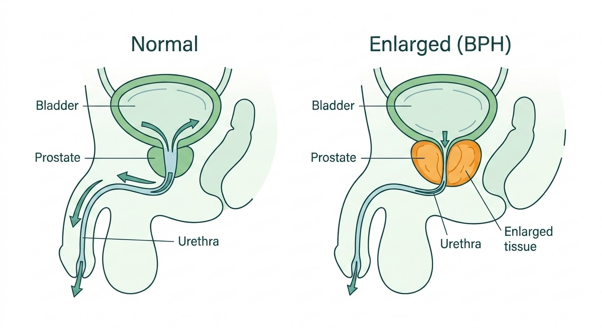

When an Enlarged Prostate Becomes a Problem
The prostate is a small gland that sits below the bladder and surrounds the urethra — the tube that carries urine out of the body. As men age, the prostate often grows larger. This is called benign prostatic hyperplasia (BPH), and it’s extremely common.

For many men, the growth is gradual and manageable with medication. But when the prostate becomes large enough to squeeze the urethra significantly, it can cause real problems: a weak or interrupted stream, the feeling that the bladder never fully empties, getting up multiple times at night, and in more advanced cases, an inability to urinate at all.
When medications are no longer enough, surgery to remove the obstructing tissue is the next step. The question is which approach.
What is GreenLEP?
GreenLEP — GreenLight Laser Enucleation of the Prostate — is a minimally invasive laser procedure that removes the enlarged portion of the prostate causing the blockage. A specialized laser fibre is passed through the urethra (no incisions are made), and the obstructing tissue is carefully separated from the outer shell of the prostate and vaporized.
The procedure uses the GreenLight XPS 180W laser — a well-established platform that many men in the GTA may have heard of in the context of laser vaporization (PVP). GreenLEP takes that technology further: rather than shaving tissue away from the surface, the laser is used to separate the entire blockage as a unit — the same principle as traditional open surgery, but done through the natural urinary passage with no cuts.
Most patients go home the same day or the following morning.
Who Is This For?
GreenLEP can be performed on prostates of any size — including very large glands of 200 grams or more — where standard approaches may struggle with the volume of tissue involved, and where open or robotic surgery would otherwise be the main alternative.
It may be appropriate when:
- Prostate medications are no longer controlling symptoms
- The bladder is not emptying properly, or you are unable to urinate at all
- Urinary infections or bladder stones keep coming back because of the blockage
- Blood thinners make other surgical options riskier
A Note About Bladder Function
Surgery removes the blockage. What it cannot do is repair a bladder that has lost its ability to squeeze. When obstruction has been present for a long time, the bladder muscle can weaken. In those cases, no operation — regardless of technique — will fully restore a strong stream.
This is assessed during the consultation. When the bladder is still working well, the results of surgery can be dramatic. When it isn’t, that conversation happens before any decision is made.
This is not a reason to delay seeing a specialist. It is a reason to be seen sooner, before irreversible changes occur.
Advantages of GreenLEP
Works at Any Size
Standard laser vaporization slows down as the prostate gets bigger — a very large gland requires far more time and energy. GreenLEP separates the blockage as a whole unit, so the approach scales to any size, including prostates over 200 grams.
Low Bleeding Risk
The GreenLight laser naturally seals blood vessels as it works, making bleeding during and after surgery substantially lower than with traditional approaches. This is especially important for men who take blood thinners and may not be able to stop them safely.
Urinary Control Preserved
Because the laser works along the prostate’s natural tissue plane, it avoids disturbing the muscle that controls urination. Long-term leakage is rare.
Some temporary urgency is normal in the first weeks as the bladder adjusts. This almost always settles.
No Incisions
Everything is done through the natural urinary passage. There are no cuts, no drains, and most patients go home the same day or the next morning.
A note about sexual function. Erections and sensation are not affected. However, retrograde ejaculation — where semen passes backward into the bladder instead of forward — is expected after GreenLEP, as it is after virtually all prostate surgeries that open the bladder neck. This means the procedure is not compatible with future fertility. This is discussed in detail during the consultation.
What about other laser enucleation techniques? You may have read about HoLEP (holmium laser enucleation) or ThuLEP (thulium laser). These are all well-established enucleation approaches endorsed by international guidelines, and they share the same core principle: separating the enlarged tissue from the outer prostate shell through the urethra. The laser platform and specific technique vary, but the concept is the same. During your consultation, Dr. Yan will explain why GreenLEP is the approach used in his practice.
What to Expect
Consultation
After your family doctor sends a referral, you’ll be seen in clinic. The visit includes a review of your symptoms, medications, and relevant tests. Bladder function is assessed to make sure surgery is likely to help. If GreenLEP is appropriate, the procedure, risks, and recovery are discussed in detail, and a surgical date is booked.
Day of Surgery
The procedure is performed under spinal or general anaesthesia at St. Joseph’s Health Centre. It typically takes 60–120 minutes depending on the size of the prostate. A catheter is placed at the end of the procedure. Most patients go home the same day or stay one night.
First Week
The catheter is removed within a few days to one week, depending on prostate size. Some blood in the urine is normal and settles over the first week or two. Most men are driving within a week and returning to light daily activity.
Weeks 2–8
Urinary urgency and frequency are common as the bladder adjusts to the absence of obstruction. This almost always settles within a few weeks to a couple of months. Most men notice a significant improvement in their stream well before that. A follow-up visit confirms recovery is on track.
If you take blood thinners: Coming off anticoagulation before surgery is preferred when possible, as it leads to a smoother recovery. When stopping is not safe, bridging strategies and other options are discussed on a case-by-case basis.
The Evidence
GreenLEP and the GreenLight laser platform are supported by randomized trials, large case series, and international guideline endorsement. The summaries below are for patients and referring physicians who want to look further into the data.
Endorsed by International Guidelines
Endoscopic enucleation of the prostate — including GreenLEP — is recommended by both the European Association of Urology and the American Urological Association as a size-independent surgical option for BPH.
The GOLIATH Trial
281 patients across 29 centres — GreenLight matched TURP outcomes with fewer complications
The GOLIATH Trial
281 patients across 29 centres — GreenLight matched TURP outcomes with fewer complications
The largest randomized trial comparing GreenLight laser to conventional TURP. Conducted across nine European countries, it found the GreenLight XPS system was as effective as TURP on symptom scores and urinary flow at two years, with a complication-free rate of 83.6% (GreenLight) versus 78.9% (TURP), and shorter hospital stays.
The GOLIATH trial used laser vaporization. GreenLEP builds on the same platform with the added advantage of enucleation for larger glands.
Bachmann et al., J Urol 2015; Thomas et al., Eur Urol 2016.
Randomized Trial in Large Prostates
Three-year follow-up — enucleation-based techniques more durable than resection
Randomized Trial in Large Prostates
Three-year follow-up — enucleation-based techniques more durable than resection
A randomized trial comparing three surgical approaches specifically in men with large prostates (80–150 mL) found that enucleation-based techniques — including GreenLight vapo-enucleation — provided more durable results than conventional resection over three years of follow-up.
Elshal et al., BJU Int 2020.
Published Outcome Series
Significant symptom improvement at 3 months, durable through 2+ years
Published Outcome Series
Significant symptom improvement at 3 months, durable through 2+ years
A 2019 case series of 108 patients undergoing simplified GreenLEP found peak urinary flow more than tripled at three months, symptom scores dropped by two-thirds, and improvements held through two years. A separate series of 120 patients with a median prostate size of 98.5 mL reported no re-operations at 18 months of follow-up.
A 2025 meta-analysis in Lasers in Medical Science comparing three GreenLight techniques found GreenLEP had the best functional outcomes and the lowest re-operation rate.
Urology, 2019; Ferrari et al., Minerva Urol Nephrol 2021; Lasers Med Sci, 2025.
Is This Right for You?
Not every man with a large prostate needs surgery, and not every man who needs surgery is best served by GreenLEP. The consultation is where that is worked out — reviewing the symptom history, the bladder function, the anatomy, the medications, and what you actually want from the outcome.
A referral from your family physician is the first step. From there, the assessment is straightforward.
If You Are in Retention or Catheter-Dependent
Patients who are unable to urinate on their own or who are dependent on a catheter are prioritized for both consultation and surgical booking. If this applies to you, please ask your family physician to indicate it on the referral so we can expedite the process.
How to Refer
Family Physicians
Fax referrals are preferred and accepted at 416-767-2403.
You may also email Dr. Yan’s secretary, Cathy Zagouris, at cathy.zagouris@unityhealth.to.
Patients in retention or catheter-dependent — please flag on referral for expedited booking.
Ocean eReferral is pending and will be available soon.
Patients
A referral from your family physician or nurse practitioner is required. Please ask them to fax or email a referral to Dr. Yan’s office at St. Joseph’s Health Centre.